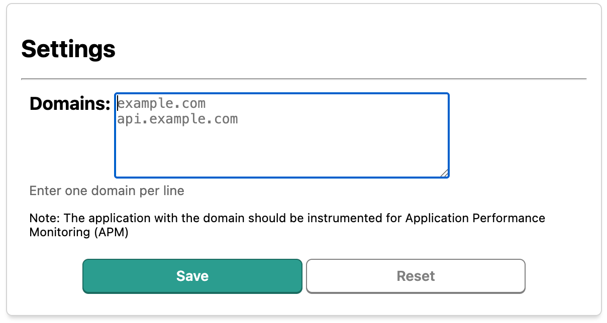

I built something that's been saving my sanity for a while now, and I figured it was time to share.
If you've ever stared at Datadog APM, scrolling through thousands of traces trying to find that one request you made from your browser three minutes ago… this post is for you.
The Problem
Here's the thing about debugging distributed systems: the actual debugging part isn't even the hard part anymore. It's finding the right trace to debug.
Picture this. You're testing a checkout flow on staging. Something's broken. You click "Place Order" and get a vague error. Now you need to trace that request through your frontend, API gateway, auth service, payment service, and inventory service.
You pop open Datadog APM. And there it is: 47,000 traces from the last 15 minutes. Your one request is somewhere in there. Probably.
"Hey, can you filter by user ID?"
Sure, if your services propagate user context correctly. (Spoiler: they don't always.)
"What about by endpoint?"
Great, now you're down to 3,000 traces. Progress.
You start clicking through traces like you're swiping on a dating app, hoping to find "the one." Sound familiar?
And here's the kicker — sometimes your trace isn't even there. Datadog's retention filters sampled it out because it looked "normal." Your bug got marked as uninteresting and yeeted into the void. Gone. Poof.
The Solution
I built a Chrome extension called Datadog APM Tracer that flips the whole process on its head.
Instead of making a request and then hunting for it in Datadog, you:
- Open the extension and hit "Toggle ON"
- The extension generates a unique trace ID
- Every request from that browser tab now carries Datadog's trace headers
- Click the link in the extension → you're looking at your trace in Datadog
In human terms: it's like putting an AirTag on your request before sending it into the microservices wilderness.
Key features
-
Multi-domain support — Configure multiple domains (your
frontend, API, CDN) and trace requests to all of them

-
Automatic header injection — Adds the trace headers
automatically
x-datadog-trace-idx-datadog-parent-idx-datadog-originx-datadog-sampling-priority
- Visual tab grouping — Traced tabs get grouped and highlighted in green so you don't forget which tab is being traced
-
Bypass retention filters — The
synthetics-browserorigin flag tells Datadog to keep this trace, period.
The best part? You get a direct link to your trace. No searching. No scrolling. No existential dread.
Why Build This
I've been using this internally for over a year now. Every time I needed to debug something end-to-end — slow backend, failed account creation, weird auth redirect — I'd fire up the extension, reproduce the issue, and go straight to the trace.
After sharing it with a few teammates, I cleaned it up, added multi-domain support, and put it on the Chrome Web Store.
This Is For You If…
- You're an engineer working with Datadog APM
- You debug issues that span browser → backend → microservices
- You've lost traces to retention filters and wanted to flip a table
- You're tired of the "refresh and hope" approach to finding your requests
- Your services are instrumented with Datadog, but finding your specific trace still feels like archaeology
If you're not using Datadog APM, this won't help you. (But maybe it's a sign you should look into it — distributed tracing is a game changer for debugging.)
Links
The extension is free and open source:
- Install: Chrome Web Store
- Source: GitHub
- Issues/Questions: GitHub Issues
Go trace some bugs. This is the way!